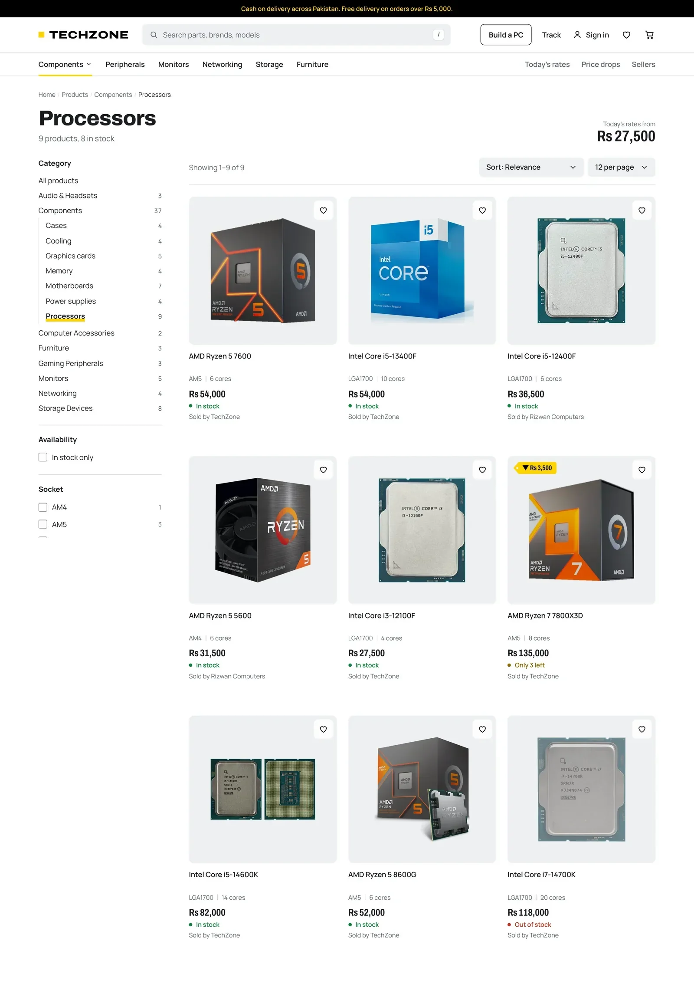
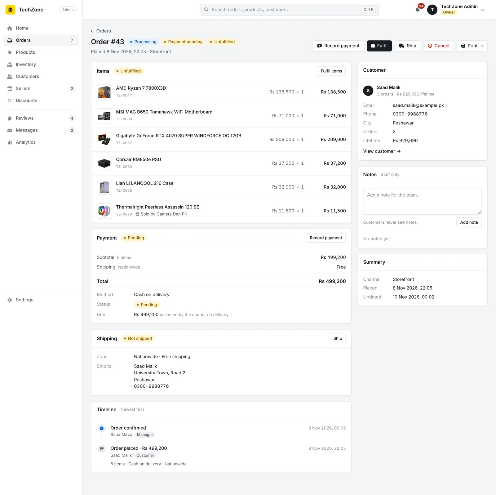
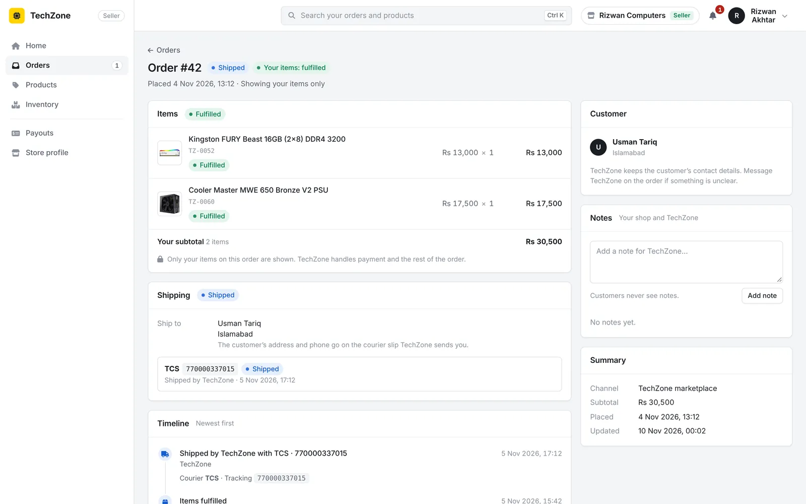

The brief
In Lahore, PC parts are bought in markets like Hafeez Centre and Hall Road, where prices move every week and the first question is always “aaj ka rate kya hai?”, what does it cost today. Building a PC adds a second problem: a processor, board, memory, case and power supply have to fit each other, and the mistakes are expensive.
TechZone is my answer to both, built as if a real shop were going to use it: the day’s rate is the headline, the builder will not let you pair parts that don’t fit, and the back-office covers what staff actually do all day, from confirming an order to explaining why the stock count is what it is.
I wrote it without a framework on purpose. I wanted to understand the parts a framework normally hides: sessions, CSRF protection, transactions, permissions. Everything security-related lives in one shared core/ library that both the storefront and the admin use, so a fix lands once.
What it does

- Storefront. Today’s rates with a 12-week history for every part, a catalogue with filters per category (socket, cores, video memory and so on), comparison, wishlist, back-in-stock alerts, and checkout with cash on delivery.
- PC builder. Pick a processor and every list after it shows only the parts that fit, with the estimated power draw and the total at today’s prices.
- Back-office. Orders with a full timeline, a stock ledger, products with their specifications, discounts, shipping zones, staff roles and an activity log of every change.
- Marketplace. Partner shops apply to sell, get their own scoped view of the same back-office, and receive weekly payout statements.
Decisions
Compatibility rules are plain functions on the server
The builder checks socket, memory type, motherboard size, graphics card length, cooler height and power, using each product’s specifications. The rules are pure functions in core/builder.php, used the same way by the storefront, its API and the admin, so there is one definition of “fits”.
A part that doesn’t fit isn’t silently hidden. The picker can list it with the reason, which turns a rejection into something a customer can learn from.
The rules are only as good as the data, so the product editor has a Specifications card with the fields each part type needs. The values the builder compares are fixed choices, and a part cannot go live without them.
Checkout cannot sell what isn’t there
Placing an order runs in one transaction. The product rows are locked in a fixed order, every line is re-priced from the database rather than trusted from the cart, and stock is reduced with a guarded update that fails if there isn’t enough. Anything that goes wrong rolls the whole order back.
To check it, I fired 12 checkouts at the same moment for a product with 3 units in stock. Exactly 3 orders went through and the stock ended at 0.
Stock is a ledger, and orders have a timeline
Stock never changes by editing a number. Every change is an adjustment row with a reason (received, sold, returned, damaged, correction) and the person who made it, and the seed and the migration both check that the adjustments add up to the stock on hand. Every step of an order is an event, and every change in the admin is written to an activity log with the old and new values.

Partner sellers are limited by the queries, not the menus
The admin has four roles: owner, manager, staff and seller. A seller signs in to the same back-office but every query is scoped to their own products and to their lines on shared orders. Another shop’s order is a 404, not a page with the buttons hidden.

Security written by hand, and written down
Prepared statements everywhere with emulation switched off; one CSRF token per session compared in constant time; session IDs renewed at every sign-in; sign-in throttling per IP and per session; the same message for an unknown e-mail and a wrong password; uploads checked by their content, not their name. Each of these, and the known gaps, is listed file by file in the project’s security notes.
What I’d do differently
The automated checks are end to end: on every push, a CI job boots the real stack, seeds it and calls the real endpoints, including the security checks. There are no unit tests for the PHP functions themselves, and the builder rules are exactly the kind of code that should have them. That is the first thing I would add, followed by browser tests for checkout and the order flow.
For a real shop I would build on a framework such as Laravel. Writing sessions, CSRF and routing myself taught me what a framework does and why, which was the point, but I would not ask a client to maintain my versions of them.
Payments are a placeholder, the prices are demo data, and the content security policy is still in report-only mode until the last inline scripts move into files.